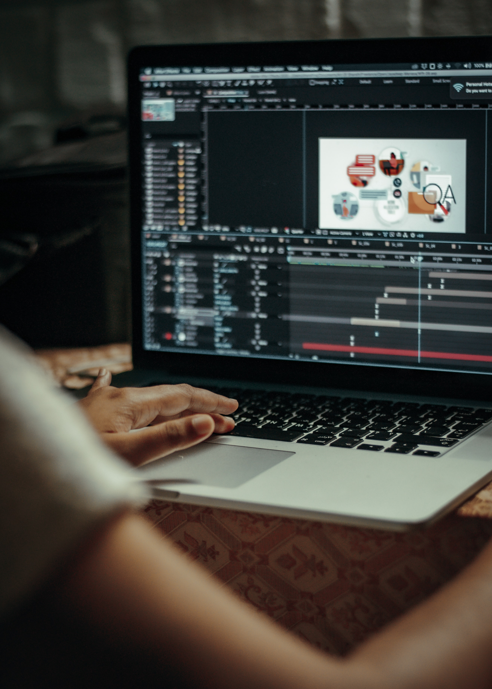

<!DOCTYPE html>
<html></html>
<head>
<title>Motion graphics</title>
<meta charset="utf-8">
</head>
<body>
 <h1><a href="index.html">Motion graphics</a></h1> 
<ol>
  <li><a href="1.html">개요</a></li> 
  <li><a href="2.html">분류</a></li> 
  <li><a href="3.html">관련 문서</a></li>
</ol>

<h2><strong>1.</strong>개요</h2>
<p>움직임(Motion)과 그래픽(graphics)의 합성어로, 간단하게 말하자면 움직이는 그래픽을 뜻한다.</p>
디지털 이미지에 아이디어를 더해 영상으로 의미(메세지)를 전달하는 것으로, 방송 프로그램의 오프닝 타이틀 영상이나 기업의 브랜딩 영상, 영화 속 크레딧 시<br>퀀스, TV 채널의 스테이션 ID 영상 등과 같은 영상들을 말한다. 최근에는 모션그래픽의 경계가 모호해진 면이 있는데, 넓은 의미로는 CG, VFX, 애니메이션도<br> 모션그래픽의 일종으로 보기도 한다.
<p>모션 그래픽 특유의 창의적이고 현란한 그래픽은 보는 이의 시선을 사로잡는 효과가 있고 이러한 특징은 영화와 광고 뿐만 아니라 박람회나 전시장, 웹, 모바일,<br> 인터넷, 전광판 등의 여러 미디어에 영향을 미치고 있다. 과거에는 TV에 국한되어 있던 모션 그래픽의 범위가 현재는 건물 외벽에 LED 조명을 비춰 영상을 표<br>현하는 미디어 파사드 등과 같이 표현 형식도 다양해지고 있다.</p>
주된 사용 그래픽 툴로는 <strong>어도비 애프터 이펙트</strong>, <strong>시네마 4D</strong>가 있다. 디자인의 기본이 되는 툴인 <strong>어도비 포토샵</strong>과 <strong>어도비 일러스트레이터</strong>도 거의 필수적으로 사<br>용된다.
</body>
</html>